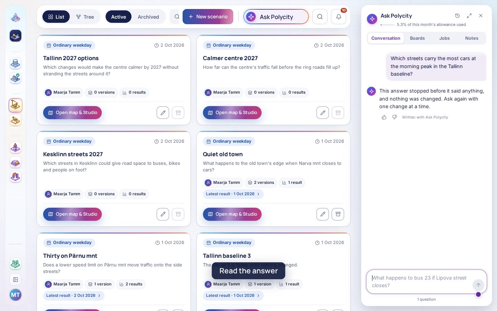

Filmed this week
What changed →By area 102
Every workflow 102
| Film | Workflow | Part | Steps | Filmed |
|---|---|---|---|---|
 0:59 0:59 |
Close streetClose a street, or part of one, for the hours you choose. | Close | New | |
 0:56 0:56 |
Blocked laneBlock one lane of a street, as roadworks or a parked delivery would. | Close | New | |
 0:38 0:38 |
Modal filterPut a filter on a street that lets people on foot and on bikes through and stops cars. | Close | New | |
 0:54 0:54 |
Set capacityChange how many vehicles an hour a street can carry. | Speed and lanes | New | |
 0:55 0:55 |
Set travel speedChange how fast traffic moves along a street when it is not busy. | Speed and lanes | New | |
 0:56 0:56 |
Set speed limitLower or raise the speed limit on the streets you pick. | Speed and lanes | New | |
 0:55 0:55 |
Set lane countAdd or remove lanes on a stretch of street. | Speed and lanes | New | |
 0:38 0:38 |
Set allowed modesChoose who may use a street: cars, buses, bikes or people on foot. | Who may use it | New | |
 0:45 0:45 |
One-way streetMake a street one-way, in the direction you choose. | Who may use it | New | |
 0:43 0:43 |
Reallocate laneGive one lane of a street to buses, bikes or deliveries. | Who may use it | New | |
 0:59 0:59 |
Freight restrictionKeep lorries off a street, or let them in only at certain hours. | Who may use it | New | |
 1:04 1:04 |
Reshape a streetMove the line a street follows, keeping both its ends. | Build | New | |
 0:55 0:55 |
Remove a streetTake a street out of the city's network altogether. | Build | New | |
 0:43 0:43 |
Noise wallDraw a noise wall along a street. | Noise | New | |
 0:53 0:53 |
Put in a tunnelPut a stretch of street underground. | Noise | New | |
 0:43 0:43 |
Ban turnBan one turn at a junction. | Turns | New | |
 0:42 0:42 |
Permitted turnsChoose every turn a junction allows, one approach at a time. | Turns | New | |
 0:41 0:41 |
Junction controlChoose how a junction is run: traffic lights, a roundabout or right of way. | Signals | New | |
 0:45 0:45 |
Signal timingSet how long each light at a junction stays green. | Signals | New | |
 0:42 0:42 |
Transit signal priorityGive buses and trams a green light as they reach a junction. | Signals | New | |
 1:25 1:25 |
Junction studyDraw a junction to study closely, vehicle by vehicle. | Study | New | |
 0:31 0:31 |
Parking supplyAdd or take away parking spaces in an area. | Parking | New | |
 0:31 0:31 |
Workplace parking levyCharge employers for each parking space they give their staff in an area. | Parking | New | |
 0:43 0:43 |
Park and ridePlace a park and ride site beside a bus or tram stop. | Parking | New | |
 0:32 0:32 |
Kerb useSet what the kerb in an area is for: parking, deliveries, taxis or bikes. | Kerb | New | |
 0:55 0:55 |
Charging stationPlace a charging station for electric cars. | Kerb | New | |
 0:37 0:37 |
Toll cordonDraw a charging cordon around an area. | Road charges | New | |
 0:37 0:37 |
Charge scheduleSet what drivers pay to enter an area, hour by hour. | Road charges | New | |
 0:31 0:31 |
Distance chargeCharge drivers for each kilometre they drive inside an area. | Road charges | New | |
 0:33 0:33 |
Low-emission zoneDraw a low-emission zone. | Low-emission zone | New | |
 0:33 0:33 |
Vehicle class accessChoose which kinds of vehicle may enter a low-emission zone. | Low-emission zone | New | |
 0:27 0:27 |
Access toChoose which places count when a run measures what people can reach. | Cost of travel | New | |
 0:24 0:24 |
Distance costChange what each kilometre costs a traveller, by way of travelling. | Cost of travel | New | |
 0:24 0:24 |
Daily mode costChange the fixed cost of a day's travel by car, bus or bike. | Cost of travel | New | |
 0:37 0:37 |
Remove lineTake a bus or tram line out of the timetable. | Lines | New | |
 5:39 5:39 |
Reroute lineSend a line along a different route between two of its stops. | Lines | New | |
 0:37 0:37 |
Vehicle typeChange the vehicles a line runs with and how many people each carries. | Service | New | |
 1:05 1:05 |
Track countChange how many tracks a stretch of railway has. | Service | New | |
 0:36 0:36 |
Fare structureChoose how fares are set: one price, by zone or by distance. | Fares | New | |
 0:37 0:37 |
On-demand shuttleDraw an area served by shuttles that come when called. | On demand | New | |
 0:59 0:59 |
Shuttle hubPlace a hub where shuttles wait between trips. | On demand | New | |
 0:28 0:28 |
Taxi fleetSet how many taxis serve the city and what they cost. | On demand | New | |
 0:55 0:55 |
Cycle laneAdd a cycle lane to a street. | Cycling | New | |
 0:54 0:54 |
Cycling provisionSet how a street is built for cycling: shared, a painted lane or a separate track. | Cycling | New | |
 0:39 0:39 |
Bike share docksPlace docks for shared bikes. | Shared bikes and scooters | New | |
 0:28 0:28 |
Micromobility rulesSet where shared bikes and scooters may ride and be left. | Shared bikes and scooters | New | |
 0:35 0:35 |
Scale populationGrow or shrink the number of people living in the districts you pick. | Residents | New | |
 0:35 0:35 |
District populationSet how many people live in a district. | Residents | New | |
 0:36 0:36 |
Income mixChange the mix of incomes in a district. | Residents | New | |
 0:34 0:34 |
Car ownershipChange how many households in a district own a car. | Residents | New | |
 0:36 0:36 |
Fleet mixChange the mix of cars residents drive: petrol, diesel or electric. | Residents | New | |
 0:34 0:34 |
Electric shareChange the share of residents' cars that are electric. | Residents | New | |
 0:46 0:46 |
Daily routinesChange the shape of residents' days: work, school, shopping and home again. | Work and daily life | New | |
 0:34 0:34 |
JobsChange how many jobs a district holds. | Work and daily life | New | |
 0:34 0:34 |
Remote workingChange the share of residents who work from home on a given day. | Work and daily life | New | |
 0:27 0:27 |
Activity timesChange when people start and end work, school and their other activities. | Work and daily life | New | |
 0:31 0:31 |
New developmentDraw a new housing or office development. | New places | New | |
 0:30 0:30 |
New destinationsAdd shops, schools or other places people go to. | New places | New | |
 0:38 0:38 |
EventPlace an event, with how many people come and when. | Visitors | New | |
 0:39 0:39 |
Delivery demandSet how many deliveries a district receives each day. | Goods to move | New | |
 0:40 0:40 |
Long-haul freightSet the lorries carrying goods into and out of a district. | Goods to move | New | |
 0:39 0:39 |
Collection roundSet the collections a district needs, such as waste or recycling. | Goods to move | New | |
 0:37 0:37 |
Freight depotPlace a freight depot. | Places | New | |
 0:57 0:57 |
Consolidation centrePlace a centre where goods are gathered before the last stretch. | Places | New | |
 0:30 0:30 |
Goods fleetSet the vehicles that carry goods: vans, lorries and cargo bikes. | Fleet and rules | New | |
 0:23 0:23 |
Driver hoursSet how long delivery drivers work and rest. | Fleet and rules | New | |
 1:05 1:05 |
GatewayPlace a gateway where traffic enters the city from outside. | Outside traffic | New | |
 0:33 0:33 |
Through trafficAdd traffic that crosses the city without stopping. | Outside traffic | New | |
 0:37 0:37 |
Emergency stationPlace an emergency station for fire engines, ambulances or police. | Stations | New | |
 0:27 0:27 |
Close a stationClose an emergency station. | Stations | New | |
 0:24 0:24 |
Value of timeChange how much people value their time when they choose how to travel. | Choosing | New | |
 0:25 0:25 |
Liking for each way of travellingChange how much people like each way of travelling, beyond its time and cost. | Choosing | New | |
 0:23 0:23 |
Mode choice modelChoose how the model decides each person's way of travelling. | Choosing | New | |
 0:24 0:24 |
Destination choiceChange how far people will go for shopping and other errands. | Choosing | New | |
 0:25 0:25 |
Transit comfortChange how much a crowded bus or tram puts people off. | Choosing | New | |
 0:24 0:24 |
Waiting weightChange how much people mind waiting compared with riding. | Choosing | New | |
 0:24 0:24 |
How often people rethink their dayChange how many people rethink their day after each round of the simulated day. | The day | New | |
 0:24 0:24 |
Time pressureChange how much people mind running short of time. | The day | New | |
 0:25 0:25 |
PunctualityChange how much people care about arriving on time. | The day | New | |
 0:24 0:24 |
Day plans a person keepsChange how many plans for the day each person keeps in mind. | The day | New | |
 0:25 0:25 |
Walk and cycle limitsSet how far people will walk or cycle. | Getting around | New | |
 0:25 0:25 |
Walking and cycling speedSet how fast people walk and cycle. | Getting around | New | |
 0:25 0:25 |
How direct routes areChange how direct people's walking and cycling routes are. | Getting around | New | |
 0:24 0:24 |
Parking searchChange how long drivers search for a parking space. | Getting around | New | |
 0:46 0:46 |
A quick estimateRun a scenario as a quick estimate and read its numbers a few minutes later. | Runs | New | |
 0:35 0:35 |
A simulated day, watched liveStart a simulated day of the city and watch it build, stage by stage. | Runs | New | |
 0:31 0:31 |
A day's resultsOpen a finished day and read what happened to traffic, transit, parking, exhaust and noise. | Results | New | |
 0:27 0:27 |
The decision reportMake a printable report of a run for a committee: the headline figures, the maps and the changes. | Results | New | |
 0:28 0:28 |
Trips between areasRead how many trips run between each pair of districts in the simulated day. | Results | New | |
 0:23 0:23 |
What changed in this runSee the changes a run was made with, beside the numbers they moved. | Results | New | |
 0:36 0:36 |
Two runs side by sidePut a scenario's day beside the city as it is today and read which goals each does better on. | Compare | New | |
 0:27 0:27 |
Who switched how they travelSee how many people left the car for the bus, the bike or their feet, and the other way round. | Compare | New | |
 0:25 0:25 |
Upload a census fileUpload how many people live and work in each district, and see the file checked as it arrives. | Data | New | |
 0:24 0:24 |
The city's timetableRead the bus and tram timetable the city's model runs on, and how fresh it is. | Data | New | |
 0:27 0:27 |
Traffic countsRead the city's counting stations and the vehicles each one counted through the day. | Data | New | |
 0:34 0:34 |
Build the city's starting modelBuild the baseline, a simulated day of the city as it is today, from the city's own files. | Baseline | New | |
 0:24 0:24 |
Check it against traffic countsRead the baseline's day against what the counting stations saw. | Baseline | New | |
 0:23 0:23 |
Switch to BulgarianSwitch the whole product to Bulgarian, from the menus to the results. | Workspace | New | |
 0:20 0:20 |
Invite a colleagueInvite a colleague by email and choose what their role lets them do. | Workspace | New | |
 0:21 0:21 |
SearchFind a street, a bus line, a scenario or a result from one search box. | Workspace | New | |
 0:49 |
Ask a questionAsk Polycity about the city's runs in plain words and read the answer with its figures. | Ask Polycity | New | |
| 0:47 | Build a scenario by askingDescribe a change in plain words and let Polycity draft it into a scenario. | Ask Polycity | New |
Nothing here matches.